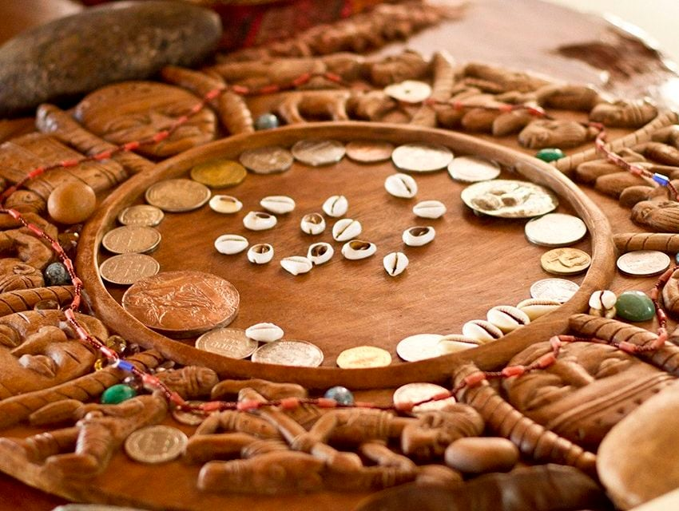

O jogo e sua importância
O jogo de Búzios é fundamental para aqueles que desejam consultar Ifá com a intenção de desvendar mistérios , adquirir cura e resolver seus problemas.
Através das caídas , cada Odu sagrado nos revela um caminho de tratemento espiritual, sempre mostrando o melhor Ebó a se fazer .